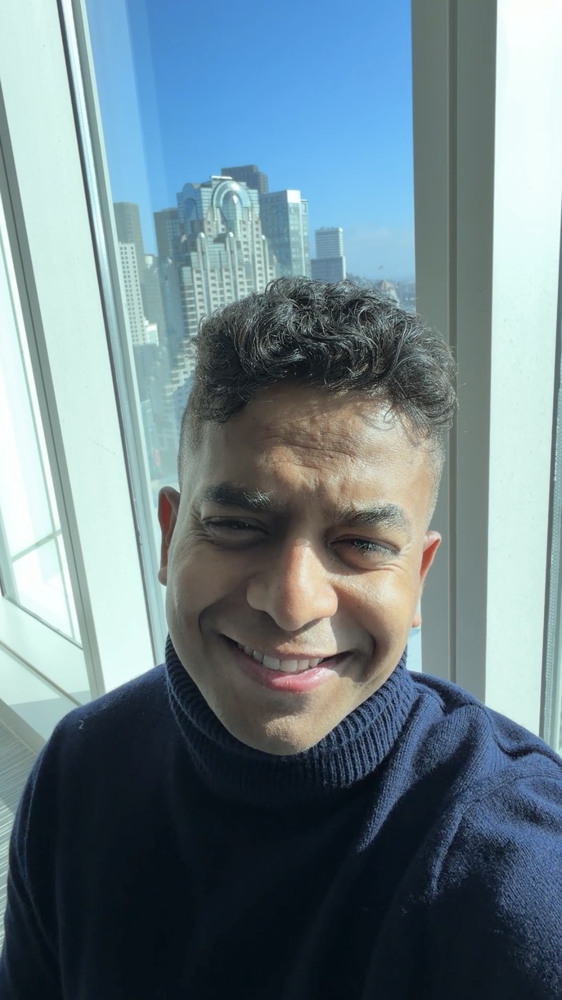

I’m drawn to first principles, unfamiliar domains, and questions without obvious answers. Curiosity is the starting point for almost everything I build, invest in, or choose to understand.
Who I Am
I’m a deeply curious engineer, strategist, investor, and builder interested in the intersection of technology, capital, and human progress.
I’m drawn to how systems work, why some institutions compound, and what becomes possible as the cost of intelligence approaches zero. My work connects disciplines—technology, business, product, and investing—where the advantage comes from understanding the whole system.
I believe intelligence is becoming infrastructure. I intend to spend my career exploring what to build, how to allocate capital, and how to organize institutions and society when intelligence is no longer scarce.

Experience
Today, I lead AI & Platforms at Aker, a ~$2B real-estate investment and operating platform. I joined as the firm’s first AI and platform hire and built its AI, data, and engineering function from the ground up.
My work spans sourcing, underwriting, asset management, operations, and portfolio monitoring. The premise is simple: AI should change how the organization works. We connect institutional knowledge, operating data, analytics, and AI through software that makes the business legible, agents that make intelligence accessible, and workflows that let software execute increasingly complex work.
Before Aker, I spent several years at Accenture working at the intersection of strategy, technology, AI, engineering, and product, advising senior executives at leading Fortune 1000 companies and global financial institutions on large-scale transformation and value creation.
I helped shape technology agendas, investment priorities, and operating models, then worked with teams to translate those strategies into products, platforms, and capabilities at scale. My work spanned data products covering $20T+ in assets, identity infrastructure supporting 80M+ users and $15T+ in capital flows, major technology investment programs, and operating initiatives that generated millions in incremental value.
Education
Honours BBA in FinanceHonours BSc in Computer Science
- University
- Wilfrid Laurier University Waterloo, ON, Canada
- Program
- Dual degree 5 years
- Minor
- Mathematics
- Research
- Independent directed undergraduate research
That combination shaped how I see technology: not simply as software, but as a mechanism for creating and allocating value.
Built from scratch0→1AI, data, engineering, and product capabilities
Team leadership5–10People led across cross-functional teams
Products built10+AI agents and intelligence products delivered
User reach80M+Monthly users served by identity platforms
Platform scale$10T+Capital across platforms supported by product work
The future may reward people who know when the answers are wrong.
Independent judgment matters most when the defaults become increasingly capable—and increasingly similar.
Consensus is useful for understanding the baseline, not for finding the edge. I try to reason from fundamentals, challenge inherited assumptions, and look for the asymmetry others have overlooked.
Ideas become valuable when they survive contact with reality. I like staying close to the product, writing code, prototyping systems, testing assumptions, and turning abstract strategy into something people can actually use.
I’m less interested in one-off wins than systems that become more valuable over time. That applies to technology, capital, knowledge, relationships, and organizations. The best decisions create more options and leverage tomorrow.
Ambition matters. I want to work on problems large enough to matter, with people who think in decades rather than quarters. Technology, intelligence, capital, and institution-building are interesting to me because each can reshape what is possible at enormous scale.
In a world where everything is becoming the same, difference becomes priceless.
I build AI to extend human judgment, not flatten it—pairing enterprise ambition with grounded products, clear evidence, and room for original thought.
Read the essay